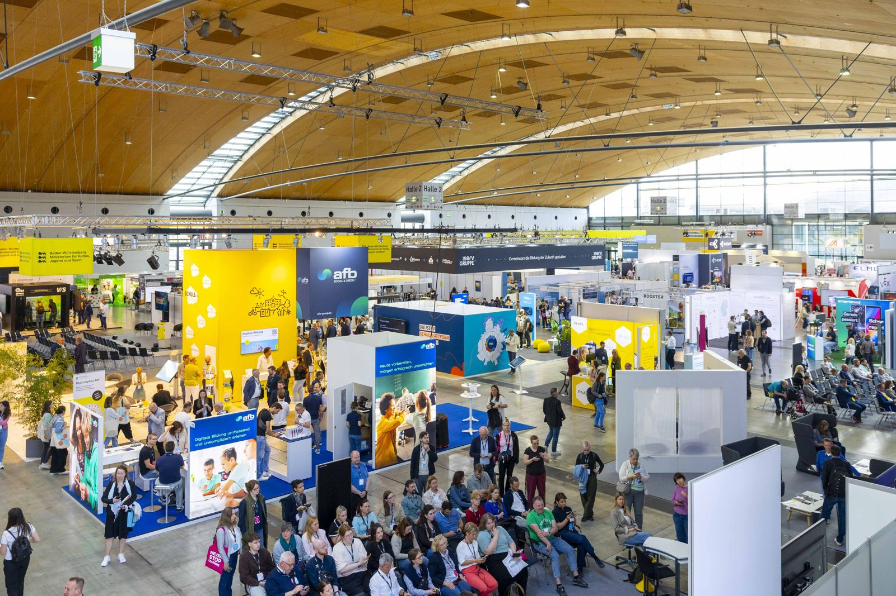

Conferences · Education
LEARNTEC 2027
- Dates
- –
- Venue
- Karlsruhe Trade Fair Centre
- Location
- Karlsruhe, Germany
- Format
- In-person
- Category
- Education
- Industry
- Digital education / edtech
- Organiser
- Messe Karlsruhe
- Official website
- https://www.learntec.de/en/
About
Dates are local to the host city (Central European Time, UTC+1 / UTC+2 in summer).
Topics: digital learning, AI in education, edtech, corporate learning, schools.
No organiser attendance figure found on the official pages fetched 24 Nov 2026. Ranked by our estimated size tier 'large' (30,000-100,000 attendees/visits), a judgement from format, venue and scale, not an official number.
Sources
- Official — https://www.learntec.de/en/
Hotels
- Hotel Erbprinz — 5★ · Rheinstraße 1, 76275 Ettlingen, Germany · 7.0 km from the venue · Price on request
- Radisson Blu Hotel Karlsruhe — 4★ · Am Hardtwald 10, 76275 Ettlingen, Germany · 4.4 km from the venue · Price on request
- Hotel Rio Karlsruhe — 4★ · Hans-Sachs-Straße 2/3, 76133 Karlsruhe, Germany · 5.2 km from the venue · Price on request
- Hotel Santo — 4★ · Karlstraße 67-69, 76137 Karlsruhe, Germany · 5.2 km from the venue · Price on request
- Schlosshotel Karlsruhe — 4★ · Bahnhofplatz 2, 76137 Karlsruhe, Germany · 5.5 km from the venue · Price on request
Venue
- Messe Karlsruhe (Karlsruhe Trade Fair Centre) — Exhibition grounds · Messeallee 1, 76287 Rheinstetten